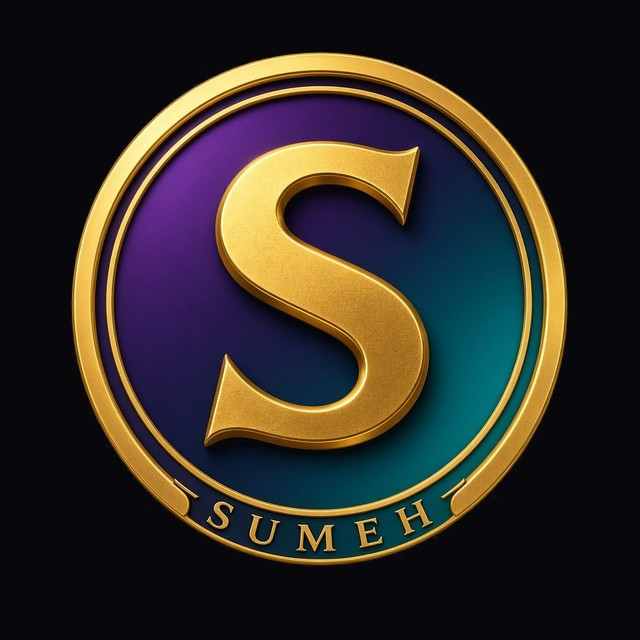

Koin komunitas
Sumeh Coin (SUMEH)
Koin komunitas untuk apresiasi, kebersamaan, dan kegiatan bersama di komunitas Sumeh.
A community token for the Sumeh community — currently a trial on Solana Devnet.
Tahap uji coba — Solana Devnet (tidak bernilai uang)
Tentang
Untuk apa koin ini?
Sumeh Coin dirancang sebagai koin komunitas. Tujuannya sederhana: menjadi tanda apresiasi antar anggota, poin partisipasi dalam acara, dan alat bantu untuk kegiatan bersama di komunitas Sumeh.
Proyek ini masih sangat awal. Saat ini token hanya ada di jaringan uji coba Solana Devnet, belum dipakai sehari-hari, dan aturannya masih akan dibahas bersama komunitas.
-
Apresiasi
Tanda terima kasih atau penghargaan antar anggota komunitas, bukan alat investasi.
-
Partisipasi acara
Poin keikutsertaan dalam kegiatan komunitas, jika nanti aturan pemakaiannya sudah disepakati.
-
Kegiatan bersama
Alat bantu untuk aktivitas komunitas. Penggunaannya masih merancang, belum ditetapkan.
Data token
Fakta di blockchain
Data di bawah ini merujuk ke token uji coba di Solana Devnet. Siapa pun bisa memverifikasinya di Solana Explorer.
- Jaringan
- Solana Devnet
- Simbol
- SUMEH
- Alamat mint
-
6Ut2LxusuU4hgbVz8BUtJSsz6xGtDt6jd5UubeaSUaLw - Total pasokan
- 1.000.000.000 SUMEH
- Desimal
- 9
Rencana
Langkah yang sedang dipertimbangkan
Ini adalah rencana kerja, bukan janji hasil, jadwal, atau nilai koin. Urutan dan isinya bisa berubah.
-
Selesai
Uji coba di Devnet
Token SUMEH sudah dibuat di Solana Devnet agar komunitas bisa melihat datanya secara terbuka.
-
Rencana
Bangun komunitas
Mengumpulkan orang yang tertarik, berdiskusi, dan merawat ruang komunitas yang sehat.
-
Rencana
Tentukan aturan pemakaian koin
Menyepakati bersama bagaimana koin dipakai untuk apresiasi, partisipasi acara, dan kegiatan komunitas.
-
Rencana
Pertimbangkan mainnet
Baru dipertimbangkan setelah komunitas lebih siap, dan hanya jika sesuai dengan regulasi yang berlaku.
Transparansi
Hal penting yang perlu diketahui
- Bukan investasi. Sumeh Coin bukan produk investasi, surat berharga, atau tawaran keuntungan.
- Tidak ada janji untung atau harga. Tidak ada target harga, imbal hasil, atau jaminan nilai.
- Tidak ditawarkan untuk dijual. Saat ini token tidak dijual ke publik dan tidak ada presale.
- Token Devnet tidak bernilai uang. Jaringan uji coba bukan uang asli. Token ini tidak bisa ditukar menjadi rupiah atau aset lain melalui proyek ini.
- Regulasi Indonesia. Jika suatu saat ada rencana penawaran ke publik, langkah itu hanya akan dipertimbangkan setelah sesuai dengan ketentuan yang berlaku di Indonesia, termasuk aturan OJK dan Bappebti.